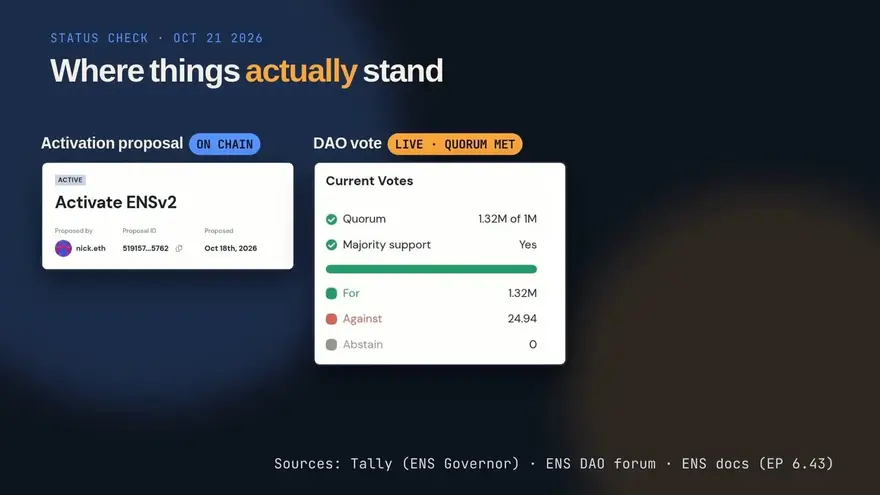
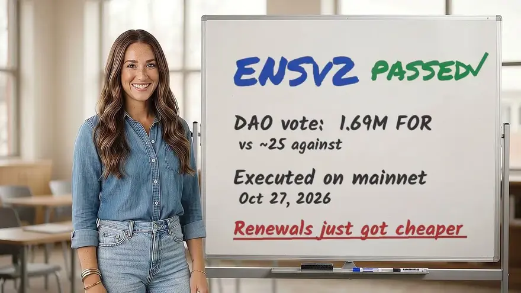

I Built an AI Agent That Makes Explainer Videos
An AI agent that researches a topic, checks the facts, writes the script and produces an explainer video with a virtual presenter. I tested it on a real explainer that I published.

A reusable HyperAgent production agent that researches a technical topic, verifies it against primary sources, scripts it, and assembles an explainer with an AI presenter. I tested it on a real ENSv2 video, published the result, and kept track of the human work it still needed.
The Problem
I wanted to understand the proposed ENSv2 changes. Instead of reading every proposal, forum post and documentation page myself, I used AI to help research it. That turned into a bigger question: could I build an agent that takes a complicated topic and produces an accurate, watchable YouTube explainer with relatively little manual production work?
A good technical explainer takes a lot of different skills: research, fact-checking, scriptwriting, presenting, graphics, editing, captions and formatting for each platform. I wanted to see how much of that a reusable production system could carry.
What I Built
AI Explainer Producer is a named agent in HyperAgent. It is not a one-off prompt. It runs on two reusable skills: a stage-gated production method (verify claims, script, storyboard, cast, pilot, produce, check) and a Python assembly toolkit that stitches presenter takes, graphics, captions and audio into finished videos.
- Research
- Verify claims
- Script
- Storyboard
- Cast presenter
- Pilot
- Produce
- Assemble & QA
- Human edit
- HyperAgent runs the agent and its tools.
- Claude Opus 5.5 handles production planning and editorial decisions; Sonnet subagents take supporting research and production tasks.
- HeyGen Avatar V generates the virtual presenter, Brody, a stock HeyGen avatar.
- HyperFrames and GSAP render the diagrams and animated explanations.
- Python and FFmpeg assemble the timeline and run technical checks: loudness, dead air, black or frozen frames.
- CapCut is where I did the final human edit.
Every stage ends at a checkpoint. The agent doesn’t pick a presenter, start full production, or publish anything without my sign-off.
The First Experiment: ENSv2
- Start from a draft. I began with a six-page script Claude had written.
- Verify it. The agent checked the claims against primary ENS sources (the activation proposal, the pricing proposal, and the official migration and registrar documentation) and kept a claim-by-claim ledger. Claims were verified, adjusted, or cut; only verified or carefully qualified ones made it into the video. That pass removed things the draft got wrong, including a line suggesting I had personally reviewed every contract call.
- Rewrite for the audience. The seven-to-eight-minute draft became an owner-focused script of about 500 words built around four questions: what will I pay, do I have to migrate, when could I lose my name, and what changes?
- Storyboard it. The storyboard used source-labeled diagrams and real screenshots of ENS documentation, with no generated interfaces or fake transactions.
- Cast the presenter. The agent generated six short auditions from stock HeyGen presenters and voices. I chose Brody with his default voice.
- Pilot first. A roughly 30-second pilot tested the presenter, a diagram, a real screenshot, captions, and both 16:9 and 9:16 cuts before committing to the full video.
- Improve, then produce. The pilot led to better graphics, larger and more readable source lines, an on-screen AI disclosure, and no silent title cards. Then the agent produced the four presenter sections and assembled the master plus two vertical cuts.
- Add the human parts. I filmed my own opening and closing on an iPhone, finished the edit and audio in CapCut, and published it.
What Worked
- A consistent presenter. The same face, voice and setting across every section. The four sections came out word-accurate with no retakes.
- Fact-checking against primary sources. The ledger made every claim traceable to an official page.
- Clear visuals for complicated ideas. Pricing, migration and grace-period rules became diagrams instead of paragraphs.
- Reusable skills. The method and the assembly toolkit aren’t tied to ENS; the next topic starts from the same system.
- Automated assembly and QA. Multiple segments, captions and loudness checks without hand-editing each piece.
- Multiple formats. A horizontal master and two vertical clips for short-form platforms.
Most importantly, it produced a real, published video, not just a prototype.
What Didn’t Work Perfectly
- The facts moved mid-production. The ENS activation vote went live while the video was being made, so the agent rechecked the sources, re-recorded one presenter line, and rebuilt the status graphic from fresh screenshots.
- Graphics needed fixing. Headlines with a stray rule through them, a timeline missing its bars, overlapping text on a vertical card, a font that rendered as boxes. All caught in review and re-rendered.
- Captions and on-screen text needed corrections.
- An assembly-script bug broke builds without a music track, and had to be patched.
- The first pilot exposed pacing problems and source lines too small to read.
- I still recorded my own footage, and my audio needed noise reduction and volume adjustments in CapCut.
- Final editorial judgment and the decision to publish were mine.
This was not a fully autonomous production. The agent did most of the research, scripting, presenting, graphics and assembly; I directed it, checked it, appeared in it, and stood behind it.

What I Learned
AI can do a substantial share of video production now. The human still supplies the direction, the judgment, the authenticity and the accountability.
Building a reusable workflow was worth more than asking a tool to make one video. The checkpoints, the claim ledger and the assembly toolkit are what I’ll keep.
And making content with AI can itself be content worth sharing. This page is part of that.
Follow-up: ENSv2 Vote Results (October 27, 2026)
After publishing the original 3:56 ENSv2 explainer, I produced a second, shorter video covering the successful ENSv2 activation vote and the upcoming multi-year renewal discounts.
This 40-second update uses an AI-generated presenter and two ENS names I own to illustrate the pricing changes:
- 108.eth: a three-year renewal at $440 per year, compared with the standard $640 annual rate.
- ashe.eth: a six-year renewal at $90 per year, compared with the standard $160 annual rate.
It’s another published output from my AI-assisted video production experiments.

What’s Next
I plan to keep testing the agent on other technical subjects. Future experiments might include better virtual presenters, shorter production time, platform-specific edits, and measuring whether AI-assisted videos perform differently from ones I make the traditional way. None of that is done yet.
Related Builds
This builds on my AI UGC video lab, where an agent generated short, fictional ad concepts with a consistent AI-generated creator. AI Explainer Producer takes the same idea further: from short experimental clips to a researched, source-verified educational video with a real person in it.